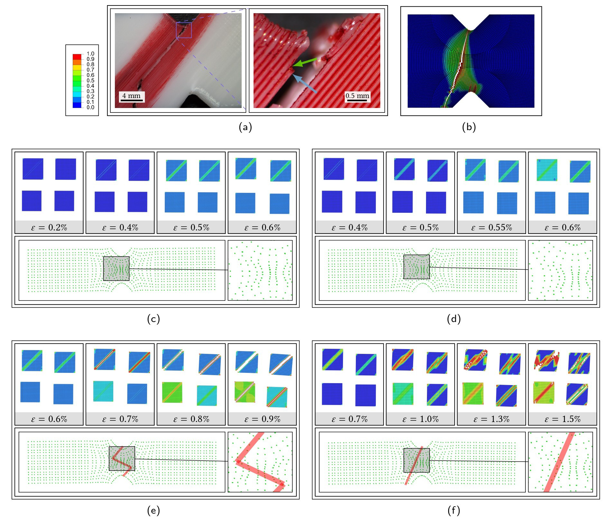

School of Engineering and Built Environment
Gold Coast QLD, Australia
The noblest pleasure is the joy of understanding.
- Leonardo da
Vinci
 Comparison of full-field FE with Direct FE² for 3D-print PLA tensile coupons
We are a research group with the Advanced Design Prototyping Technologies Institute (ADaPT) at Griffith University. We are interested in developing novel high-performance composite and auxetic materials. We are a try to adopt and extend computational approaches to simulate the material behaviour and improve our understanding.
We aim to leverage the technology in high-performance materials to improve the quality of human life, develop the industry, and contribute to the Australian economy. We envision high-quality products that are supported by state-of-the-art research to diminish the gap between industry and academia.
We are interested in developing novel high-performance composite and auxetic materials. We try to adopt and extend the current computational approaches to simulate the material behaviour and grow our knowledge. Our current focus is improving the energy-absorbing characteristics of multi-layer structures.
Read more about our ResearchOur team has several dedicated team members who collaborate with national and international researchers and industries. Most of our national collaborators are memebrs of Griffith Aerospace.
Read more about our team